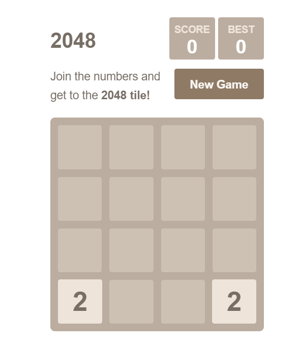
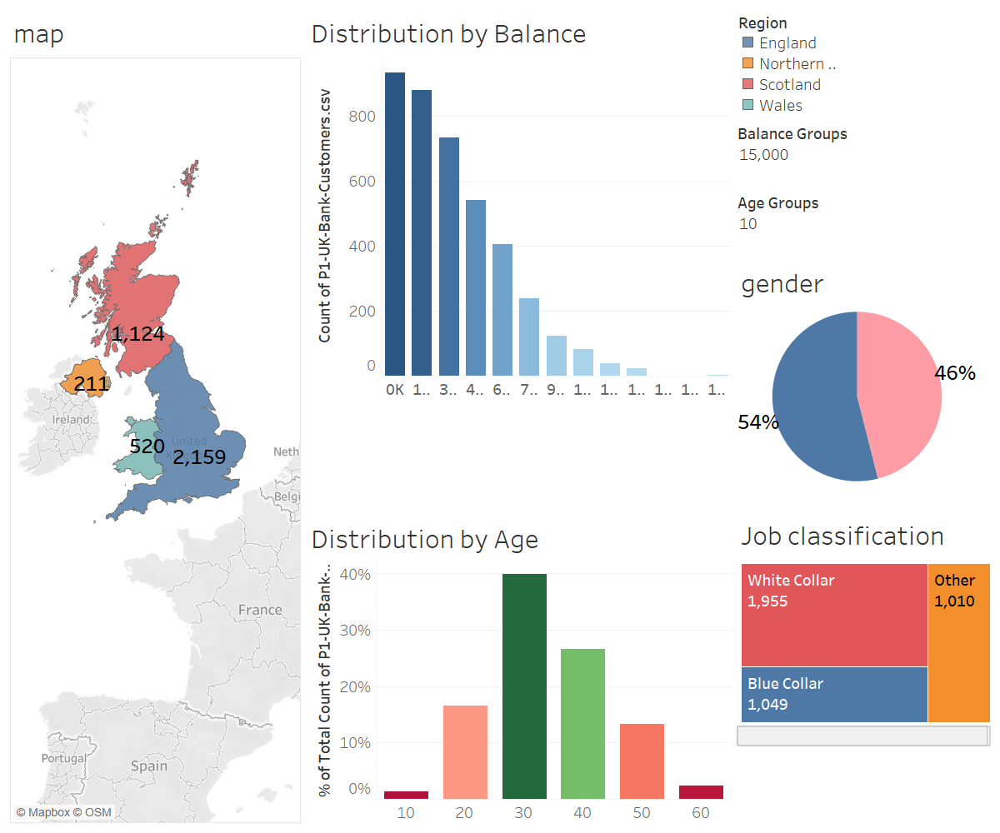
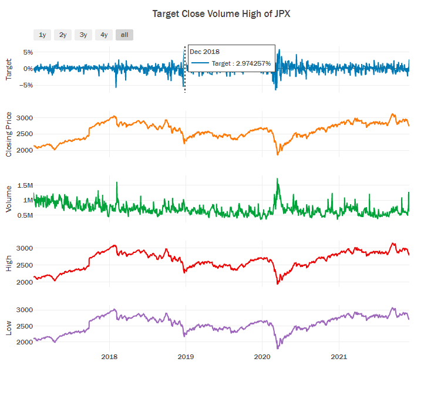

•Used front-end tools such as React.js and Material-UI to build an Instagram-like website • Built the backend server for our website with Node.js and MongoDB • Users can register accounts, upload photos, comment or like photos, tag
other people, and delete photo

Developed a Java implementation of the popular puzzle game ”2048”. Successfully programmed the four core methods of the game independently, including tile movement and merging logic, scoring, and game over conditions.Acquired proficiency
in testing and debugging techniques, ensuring the game’s smooth functionality and identifying and resolving issues during the development process
In astronomy, stellar classification is the classification of stars based on their spectral characteristics. The classification scheme of galaxies, quasars, and stars is one of the most fundamental in astronomy.Implemented a range
of machine learning algorithms such as Ramdom Forest, Gadient Boosting, Multinomial Logistic Regression and Multilayer Neural Network for classifying data samples.


Designed machine learning models, including Linear Regression, Lasso Regressor, LSTM, LightGBM, and Adaboost, for the analysis of extensive datasets. Applied these models to discern patterns and trends, specifically focused on stock
exchange prediction. Acquired proficiency in Data Exploration, Data Cleaning, Dimensionality Reduction, Feature Scaling, Handling Missing Data, Regularization, and Cross-Validation techniques within the realm of feature engineering
for comprehensive data analysis.